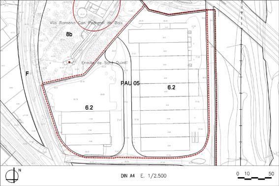

PAU 05 “Can Pedrerol de Baix” (Polígon d’actuació urbanística PAU – 05)

Objectiu: Aquest PAU es delimita per a la cessió i urbanització del viari inclòs, que dóna accés a les parcel•les incloses al mateix
Règim del sòl: Sòl Urbà No Consolidat
| Superfície del polígon: Ordenació Sistemes urbanístics de cessió: Viari (V) Zones edificables: Industrial entre mitgeres, parcel·la petita (clau 6.2) |
39.459 m2s 2.899 m2s 36.560 m2s |
(St) Sostre total |
(Segons aplicació de paràmetres de la zona ) |